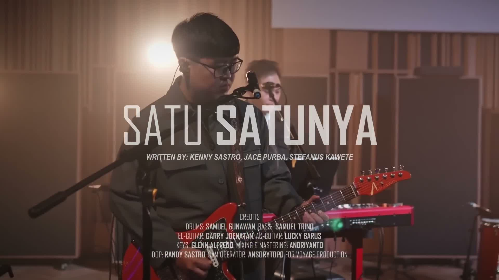

OBS overlay · motion spec 180 · the browser source's own classes

at rest
The overlay runs at 1×: a panel enters over 180 ms — opacity 0 → 1 while rising 18 px and growing from
97.5 % — and leaves over 120 ms as it sinks 7.9 px, both on cubic-bezier(.4, 0, .2, 1). The slower speeds stretch the identical
keyframes and curve for review; nothing else changes. Next verse shows the case that must not animate: a
screen step inside one entry swaps the words and leaves the panel where it is.